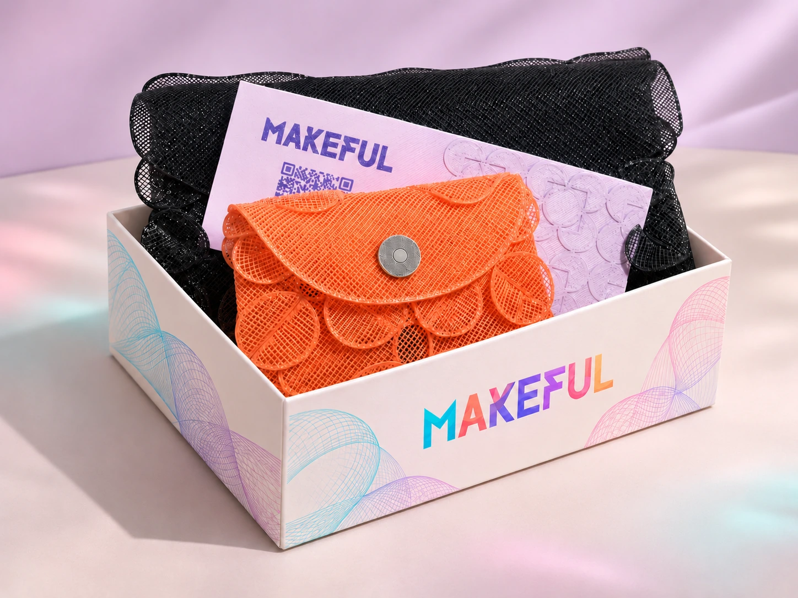

Návrh dárkového obalu, vizualizace.
MAKEFUL · OD 8 LET
Kreativní vzdělávací balíček
Sestavte si vlastní 3D tištěnou peněženku a psaníčko. Bez lepidla, nepořádku a předchozích zkušeností. Vše potřebné najdete v krabičce.
Doprava zdarma po celé ČR
Možnost platby benefitními kartami Edenred a Up Česká republika.
Ručně vyráběno v limitované sérii 100 kusů. Rozesíláme v týdnu od 7. 12. a od 15. 12.
- Vhodné od 8 let, bez zkušeností
- Pružný a odolný 100% TPU
- Doprava zdarma po celé ČR
Celý balíček a 3D tištěný voucher za 2 138 Kč. Ušetříte 426 Kč oproti nákupu zvlášť.
Co je v balíčku
- 3D tištěná peněženka na sestaveníVyberte si pružný materiál, který svítí ve tmě, mění barvu podle teploty a doteku, nebo klasickou černou variantu.
- 3D tištěné psaníčko na sestaveníPeněženku a psaníčko můžete sladit, nebo dát každému jiný efekt. Přesně podle toho, co se vám líbí.
- Knížečka o budoucnosti módySrozumitelně představí nové možnosti 3D tištěných látek, chytrých materiálů a moderního módního designu.
- Interaktivní vzdělávací zážitekHmatatelné ukázky a inspirace přiblíží, jak vzniká móda budoucnosti a jak se propojuje kreativita s technologiemi.
Popis a pro koho je dárek vhodný
Hledáte dárek, u kterého se tvoří rukama a hotový výsledek se dá hned nosit? Kreativní vzdělávací balíček Makeful obsahuje peněženku a psaníčko na sestavení z předchystaných 3D tištěných modulů. Dílky do sebe přesně zapadají. Žádné lepidlo, nepořádek ani dokupování pomůcek. Balíček je ideální pro holky, dívky i ženy od 8 let, které baví móda, design a nové materiály. Nejsou potřeba žádné předchozí zkušenosti ani speciální zručnost.
Materiály a personalizace
Peněženka a psaníčko jsou vyrobené z pružného 100% TPU a mohou být ze stejného, nebo z odlišného materiálu. Zvolte variantu svítící ve tmě, měnící barvu podle teploty a doteku, nebo klasickou černou.
Na psaníčko přidáme jméno zdarma. Materiály vyberte výše, jméno dopíšete v košíku.
Doprava a platba
Objednávky přijímáme do 30. listopadu 2026. Doprava po celé ČR je zdarma a je už v ceně. Objednávku dokončíte online v košíku. Zaplatit můžete kartou, a to i benefitní kartou Edenred nebo Up, nebo bankovním převodem. Každý kus vyrábíme ručně a rozesíláme ve dvou vlnách, v týdnu od 7. 12. a od 15. 12. 2026.
Potřebujete poradit?
Napište nám na hello@make-ful.com nebo zavolejte na 735 820 576. Rádi vám pomůžeme s výběrem.
Otázky ke kreativnímu balíčku
Co v kreativním balíčku najdu?
Peněženku a psaníčko z předchystaných 3D tištěných modulů na vlastní sestavení, designérskou knížečku o budoucnosti módy a 3D tištěných látkách a interaktivní vzdělávací ukázky materiálů.
Potřebujeme zkušenosti nebo nějaké další pomůcky?
Vůbec ne. Vše je předchystané a dílky se skládají do sebe jako stavebnice. Bez lepidla, nepořádku i vlastní 3D tiskárny.
Jaké materiály si můžeme vybrat?
Peněženka i psaníčko jsou ze 100% TPU, pružného, odolného a příjemně ohebného materiálu. Pro každý kousek zvlášť vyberete variantu svítící ve tmě, měnící barvu podle teploty a doteku, nebo klasickou černou.
Můžeme na psaníčko přidat jméno?
Ano, na psaníčko přidáme jméno zdarma. Doplníte ho v košíku přes tlačítko Upravit u balíčku nebo kombinace.
Máte i něco pro dospělé?
Ano, tvoření s Makeful baví i dospělé ženy. Kreativní balíček i workshopy jsou pro věk od 8 do 99 let. Stačí chuť objevovat nové materiály a vyrobit si originální doplněk.
Mohu si vybrat balíček i voucher dohromady?
Ano, zvýhodněná kombinace obsahuje celý kreativní vzdělávací balíček a 3D tištěný voucher. Stojí 2 138 Kč místo běžných 2 564 Kč, ušetříte tedy 426 Kč.
Kolik stojí doprava?
Doprava po celé ČR je zdarma a je již zahrnutá v uvedené ceně. Za doručení nic navíc nepřiplácíte.
Mohu zaplatit kartou Edenred nebo Up Česká republika?
Ano, přijímáme benefitní karty Edenred a Up Česká republika, které lze použít online jako běžnou platební kartu.
 Díky, že tvoříte s námi
Díky, že tvoříte s námiTvořit, objevovat, věřit vlastním nápadům.
V Makeful propojujeme vzdělávání, módu, design a nové technologie tak, aby si každý mohl věci nejen prohlédnout, ale hlavně si je vyzkoušet vlastníma rukama.
Věříme, že tvoření otevírá cestu ke zdravému sebevědomí. Proto vytváříme bezpečný prostor, kde se holky, dívky i ženy mohou ptát, experimentovat a objevit, že jejich nápady mají své místo.
Díky, že tvoříte s námi.
Linette a Hanka
Učíme se tvořením.
V Makeful propojujeme módu, design a 3D tisk. Na workshopech i doma objevujeme nové materiály při vlastním tvoření.
Více o Makeful
V Makeful se věnujeme vzdělávání v oblasti módy, designu, 3D tisku a nových materiálů. Pomáháme holkám, dívkám i ženám objevovat, jak věci fungují, zkoušet vlastní nápady a získávat nové dovednosti při praktickém tvoření.
Připravujeme vzdělávací programy pro školy i workshopy pro veřejnost, kde si vše vyzkoušíte vlastníma rukama. Pod vedením designérky a lektorky Linette Manuel propojujeme kreativitu s technickými znalostmi a ukazujeme, co všechno může vzniknout, když se tyto světy potkají.
Kreativní balíček přináší kousek tohoto objevování i k vám domů. Při sestavování vlastních doplňků se seznámíte s 3D tištěnými látkami a nakouknete do budoucnosti módy.
Nahlédněte k nám
Momentky z našich vzdělávacích workshopů.